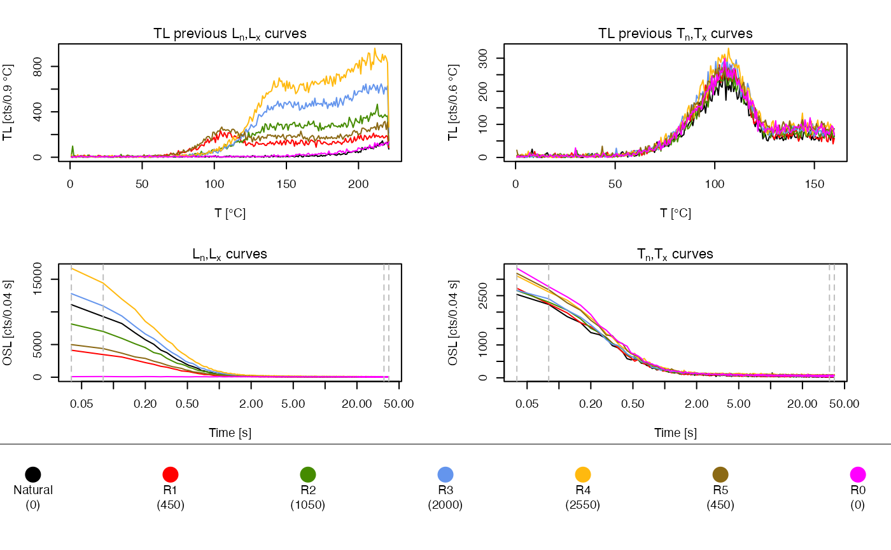
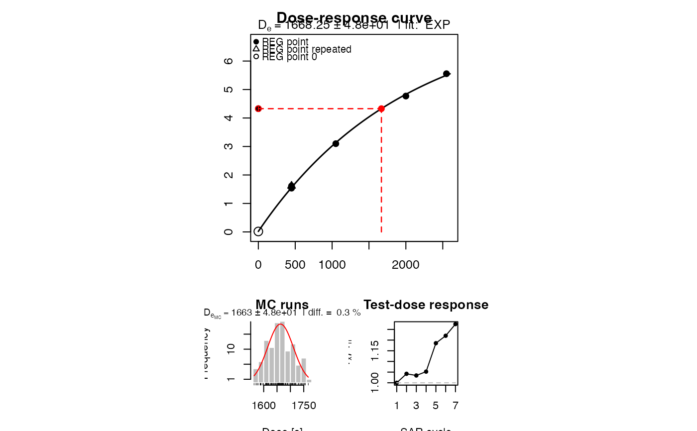
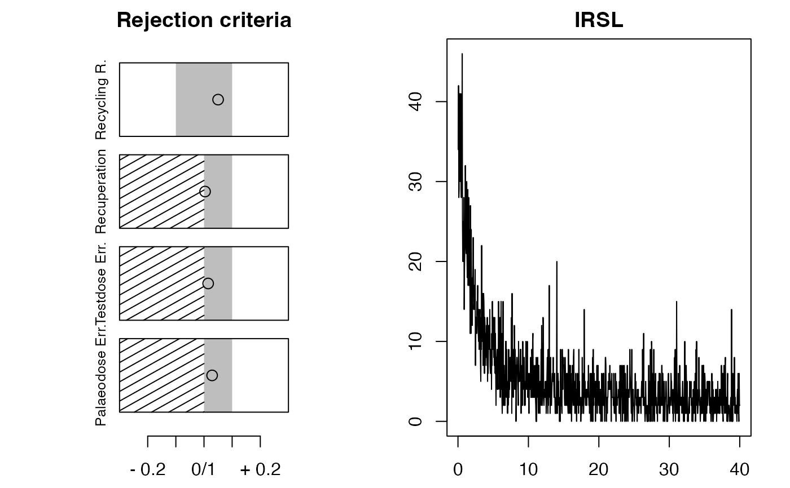

analyse_SAR.CWOSL.RdThe function performs a SAR CW-OSL analysis on an RLum.Analysis object including growth curve fitting.
analyse_SAR.CWOSL(object, signal.integral.min, signal.integral.max, background.integral.min, background.integral.max, rejection.criteria = NULL, dose.points = NULL, mtext.outer, plot = TRUE, plot.single = FALSE, onlyLxTxTable = FALSE, ...)
| object | RLum.Analysis (required): input object containing data for analysis, alternatively a list of RLum.Analysis objects can be provided. |
|---|---|
| signal.integral.min | integer (required):
lower bound of the signal integral. Can be a list of integers, if |
| signal.integral.max | integer (required):
upper bound of the signal integral. Can be a list of integers, if |
| background.integral.min | integer (required):
lower bound of the background integral. Can be a list of integers, if |
| background.integral.max | integer (required):
upper bound of the background integral. Can be a list of integers, if |
| rejection.criteria | list (with default):
provide a named list and set rejection criteria in percentage for further calculation. Can be a list in
a list, if Allowed arguments are |
| dose.points | numeric (optional):
a numeric vector containg the dose points values Using this argument
overwrites dose point values in the signal curves. Can be a list of
numeric vectors, if |
| mtext.outer | character (optional):
option to provide an outer margin mtext. Can be a list of characters,
if |
| plot | logical (with default): enables or disables plot output. |
| plot.single | logical (with default) or numeric (optional):
single plot output ( |
| onlyLxTxTable | logical (with default): If |
| ... | further arguments that will be passed to the function
plot_GrowthCurve or calc_OSLLxTxRatio
(supported: |
A plot (optional) and an RLum.Results object is returned containing the following elements:
data.frame containing De-values, De-error and further parameters
data.frame of all calculated Lx/Tx values including signal, background counts and the dose points
data.frame with values that might by used as rejection criteria. NA is produced if no R0 dose point exists.
formula formula that have been used for the growth curve fitting
The function performs an analysis for a standard SAR protocol measurements
introduced by Murray and Wintle (2000) with CW-OSL curves. For the
calculation of the Lx/Tx value the function calc_OSLLxTxRatio is
used. For changing the way the Lx/Tx error is calculated use the argument
background.count.distribution and sigmab, which will be passed to the function
calc_OSLLxTxRatio.
Argument object is of type list
If the argument object is of type list containing only
RLum.Analysis objects, the function re-calls itself as often as elements
are in the list. This is usefull if an entire measurement wanted to be analysed without
writing separate for-loops. To gain in full control of the parameters (e.g., dose.points) for
every aliquot (corresponding to one RLum.Analysis object in the list), in
this case the arguments can be provided as list. This list should
be of similar length as the list provided with the argument object,
otherwise the function will create an own list of the requested lenght.
Function output will be just one single RLum.Results object.
Please be careful when using this option. It may allow a fast an efficient data analysis, but the function may also break with an unclear error message, due to wrong input data.
Working with IRSL data
The function was originally designed to work just for 'OSL' curves, following the principles of the SAR protocol. An IRSL measurement protocol may follow this procedure, e.g., post-IR IRSL protocol (Thomsen et al., 2008). Therefore this functions has been enhanced to work with IRSL data, however, the function is only capable of analysing curves that follow the SAR protocol structure, i.e., to analyse a post-IR IRSL protocol, curve data have to be pre-selected by the user to fit the standards of the SAR protocol, i.e., Lx,Tx,Lx,Tx and so on.
Example: Imagine the measurement contains pIRIR50 and pIRIR225 IRSL curves. Only one curve type can be analysed at the same time: The pIRIR50 curves or the pIRIR225 curves.
Supported rejection criteria
[recycling.ratio]: calculated for every repeated regeneration dose point.
[recuperation.rate]: recuperation rate calculated by comparing the
Lx/Tx values of the zero regeneration point with the Ln/Tn value (the Lx/Tx
ratio of the natural signal). For methodological background see Aitken and
Smith (1988).
[testdose.error]: set the allowed error for the testdose, which per
default should not exceed 10%. The testdose error is calculated as Tx_net.error/Tx_net.
[palaeodose.error]: set the allowed error for the De value, which per
default should not exceed 10%.
This function must not be mixed up with the function Analyse_SAR.OSLdata, which works with Risoe.BINfileData objects.
The function currently does only support 'OSL' or 'IRSL' data!
0.8.6
Aitken, M.J. and Smith, B.W., 1988. Optical dating: recuperation after bleaching. Quaternary Science Reviews 7, 387-393.
Duller, G., 2003. Distinguishing quartz and feldspar in single grain luminescence measurements. Radiation Measurements, 37 (2), 161-165.
Murray, A.S. and Wintle, A.G., 2000. Luminescence dating of quartz using an improved single-aliquot regenerative-dose protocol. Radiation Measurements 32, 57-73.
Thomsen, K.J., Murray, A.S., Jain, M., Boetter-Jensen, L., 2008. Laboratory fading rates of various luminescence signals from feldspar-rich sediment extracts. Radiation Measurements 43, 1474-1486. doi:10.1016/j.radmeas.2008.06.002
##load data ##ExampleData.BINfileData contains two BINfileData objects ##CWOSL.SAR.Data and TL.SAR.Data data(ExampleData.BINfileData, envir = environment()) ##transform the values from the first position in a RLum.Analysis object object <- Risoe.BINfileData2RLum.Analysis(CWOSL.SAR.Data, pos=1) ##perform SAR analysis and set rejection criteria results <- analyse_SAR.CWOSL( object = object, signal.integral.min = 1, signal.integral.max = 2, background.integral.min = 900, background.integral.max = 1000, log = "x", fit.method = "EXP", rejection.criteria = list( recycling.ratio = 10, recuperation.rate = 10, testdose.error = 10, palaeodose.error = 10, exceed.max.regpoint = TRUE) )#> [plot_GrowthCurve()] Fit: EXP (interpolation) | De = 1668.25 | D01 = 1982.76#> De De.Error D01 D01.ERROR D02 D02.ERROR De.MC Fit RC.Status #> 1 1668.25 48.07 1982.76 100.0438 NA NA 1663 EXP OK #> signal.range background.range signal.range.Tx background.range.Tx #> 1 1 : 2 900 : 1000 NA : NA NA : NA #> UID #> 1 2019-04-19-06:03.0.878804486710578#> Name Repeated Dose LnLx LnLx.BG TnTx TnTx.BG Net_LnLx #> 1 Natural FALSE 0 20391 60.15842 4771 73.50495 20330.84158 #> 2 R1 FALSE 450 7591 65.70297 4977 81.56436 7525.29703 #> 3 R2 FALSE 1050 15150 96.17822 4960 101.92079 15053.82178 #> 4 R3 FALSE 2000 23700 118.49505 5064 121.06931 23581.50495 #> 5 R4 FALSE 2550 31094 155.92079 5715 145.84158 30938.07921 #> 6 R5 TRUE 450 9376 122.37624 5860 127.60396 9253.62376 #> 7 R0 FALSE 0 192 94.39604 6107 117.64356 97.60396 #> Net_LnLx.Error Net_TnTx Net_TnTx.Error LxTx LxTx.Error #> 1 143.03415 4697.495 69.24882 4.32801767 0.070695494 #> 2 87.39498 4895.436 71.06916 1.53720681 0.028578369 #> 3 123.18402 4858.079 71.66840 3.09871888 0.052275097 #> 4 154.46828 4942.931 72.07168 4.77075371 0.076258410 #> 5 176.39564 5569.158 75.88226 5.55525214 0.082052531 #> 6 97.54912 5732.396 77.37976 1.61426805 0.027647946 #> 7 14.86509 5989.356 78.87190 0.01629624 0.002491179 #> UID #> 1 2019-04-19-06:03.0.878804486710578 #> 2 2019-04-19-06:03.0.878804486710578 #> 3 2019-04-19-06:03.0.878804486710578 #> 4 2019-04-19-06:03.0.878804486710578 #> 5 2019-04-19-06:03.0.878804486710578 #> 6 2019-04-19-06:03.0.878804486710578 #> 7 2019-04-19-06:03.0.878804486710578